2 第一篇：人工智慧與機器學習基礎 (AI & Machine Learning Fundamentals)
歡迎來到人工智慧 (AI) 的世界！這本書將帶領你從零開始， 深入淺出地理解 AI 的核心概念、 運作原理以及它如何改變我們的生活。 我們不需要複雜的數學公式， 而是用直觀的語言和生動的例子， 讓你輕鬆掌握這些看似高深的技術。
2.1 第一章：人工智慧概論 (Introduction to AI)
2.1.1 什麼是人工智慧？
簡單來說， 人工智慧 (Artificial Intelligence, AI) 就是讓電腦擁有像人類一樣的「智慧」。 這包括學習、 推理、 解決問題、 理解語言， 甚至感知環境的能力。 想像一下， 傳統的電腦程式就像是一個只會聽命行事的工廠作業員， 你必須給它明確的指令（程式碼）， 它才會動作。 而 AI 則像是一個聰明的學徒， 它可以透過觀察數據和經驗， 自己學會如何完成任務。
2.1.2 AI 的三種型態
我們可以將 AI 依據其能力的強弱， 分為三個等級：
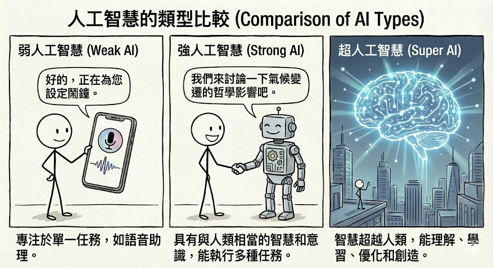
- 弱人工智慧 (Artificial Narrow Intelligence, ANI)： 這是我們目前生活中最常見的 AI。 它們是「專才」， 非常擅長做某一件特定的事情， 甚至做得比人類更好， 但在其他方面則一竅不通。
- 例子：打敗圍棋冠軍的 AlphaGo、 手機裡的 Siri 語音助理、 Netflix 的影片推薦系統。 AlphaGo 雖然下圍棋無敵， 但它不會開車， 也不會和你哈拉聊天。
- 強人工智慧 (Artificial General Intelligence, AGI)： 這是科學家們努力的目標， 也是科幻電影中常見的 AI。 它們是「通才」， 具備像人類一樣的通用智慧， 可以學習任何人類能學會的技能， 具備常識、 情感和自我意識。
- 例子：電影《雲端情人 (Her)》中的薩曼莎， 或是《鋼鐵人》中的賈維斯。 目前我們尚未真正達成 AGI。
- 超人工智慧 (Artificial Super Intelligence, ASI)： 這是理論上 AI 發展的終極階段。 當 AI 的智慧在所有領域（包括創造力、 社交技巧、 問題解決能力）都遠遠超越最聰明的人類時， 我們就稱之為超人工智慧。 這是一個充滿未知與想像的領域。
2.2 第二章：機器學習基礎 (Machine Learning Basics)
2.2.1 教電腦「學習」， 而不是「聽令」
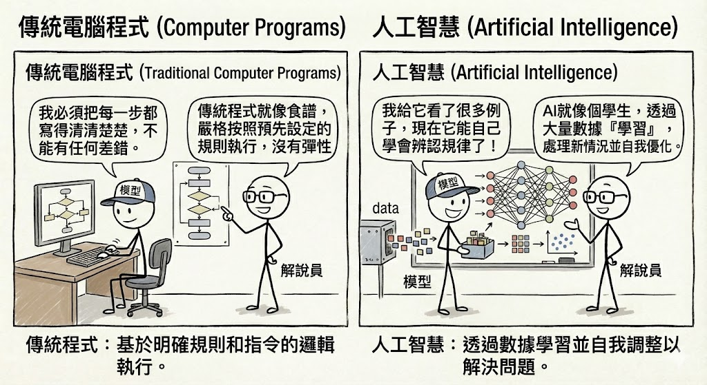
機器學習 (Machine Learning, ML) 是 AI 的一個子領域， 也是目前 AI 發展的核心動力。
- 傳統程式設計：我們輸入「規則」和「數據」， 電腦給出「答案」。 例如， 我們告訴電腦「如果下雨， 就帶傘」， 電腦看到「下雨」的數據， 就會輸出「帶傘」。
- 機器學習：我們輸入「數據」和「答案」， 電腦自己找出「規則」。 例如， 我們給電腦看一萬張貓的照片（數據）並告訴它這些是貓（答案）， 電腦就會自己分析出貓的特徵（有尖耳朵、 鬍鬚…）， 最後學會如何辨識貓。
2.2.2 機器學習的兩大學習方式 (Supervised vs. Unsupervised Learning)
在進入具體的模型之前， 我們得先知道機器學習主要分為兩大類：
- 監督式學習 (Supervised Learning)：
- 概念：就像有老師在旁邊教學生。 我們給電腦「題目（數據）」和「標準答案（標籤）」。 電腦的任務是找出題目和答案之間的關係。
- 例子：給電腦看貓和狗的照片， 並且告訴它哪張是貓、 哪張是狗。 學完之後， 給它一張新的照片， 它就能分辨是貓還是狗。
- 常見任務：迴歸 (Regression)、 分類 (Classification)。
- 非監督式學習 (Unsupervised Learning)：
- 概念：就像讓學生自己自習， 沒有標準答案。 我們只給電腦「題目（數據）」， 不給答案。 電腦的任務是自己從數據中找出隱藏的結構或規律。
- 例子：給電腦看一堆水果的照片， 但不告訴它這些是什麼水果。 電腦可能會發現有些水果是圓的、 有些是長的， 有些是紅的、 有些是黃的， 然後自動把它們分成幾堆。
- 常見任務：分群 (Clustering)、 降維 (Dimensionality Reduction)。

2.2.3 分類 vs. 預測 (Classification vs. Prediction)
在監督式學習中， 我們最常遇到的兩個任務就是「分類」和「預測（迴歸）」。 它們的主要差別在於輸出的答案類型不同。
- 分類 (Classification)：
- 答案類型：類別 (Category)。 答案是離散的、 有限的選項。
- 問題例子：
- 這封信是垃圾郵件嗎？ （是/否）
- 這張照片是貓、 狗還是鳥？ （貓/狗/鳥）
- 這個病人有沒有得癌症？ （有/沒有）
- 常用模型：邏輯迴歸、 決策樹、 SVM、 KNN、 貝氏分類器。
- 預測 / 迴歸 (Prediction / Regression)：
- 答案類型：數值 (Numerical Value)。 答案是連續的數字， 有無窮多種可能。
- 問題例子：
- 明天的氣溫是幾度？ （25.5度, 30.1度…）
- 這間房子的房價是多少？ （1000萬, 1050萬…）
- 下季度的銷售量會是多少？ （5000件, 5001件…）
- 常用模型：線性迴歸、 隨機森林（也可用於迴歸）、 神經網路。
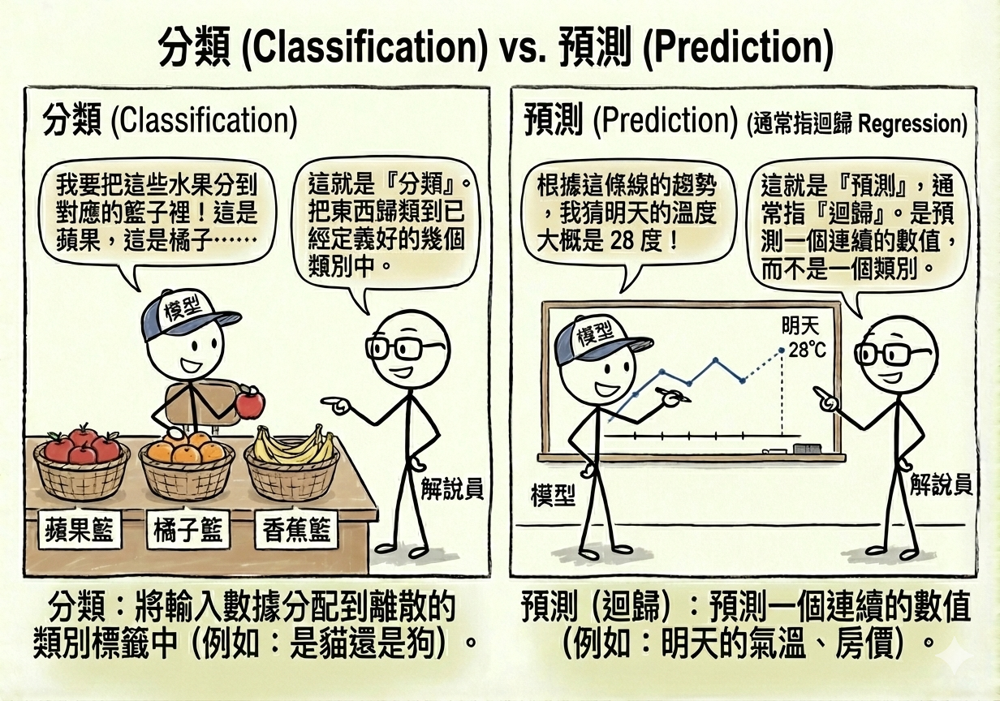
2.2.4 分群 (Clustering)
在非監督式學習中， 最常見的任務就是「分群」。
- 概念：物以類聚。 電腦自動把相似的東西歸成同一類， 但它並不知道這一類叫什麼名字。
- 問題例子：
- 客戶分眾：把消費習慣相似的客人分成一群（例如：精打細算型、 衝動購物型）， 方便行銷。
- 新聞分類：把主題相似的新聞自動歸類。
- 常用模型：K-Means, 層次分群 (Hierarchical Clustering)。
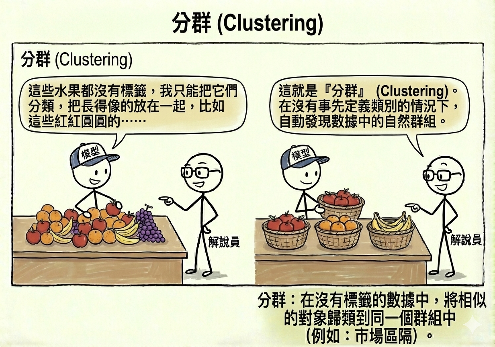
2.2.5 常見的機器學習模型 (你的 AI 工具箱)
機器學習有很多種方法（模型）， 就像工具箱裡有不同的工具， 適用於不同的問題。
- 線性迴歸 (Linear Regression)：
- 類型：預測 (Prediction / Regression)
- 概念：想像你在畫一張圖， 橫軸是房子的大小， 縱軸是房價。 你會發現點點大致分佈在一條線附近。 線性迴歸就是試著畫出這條「最佳直線」， 用來預測未來的趨勢。
- 數學原理 (Friendly Math)： 其實這條線的公式非常簡單， 就是國中學過的： \[ y = wx + b \]
- \(y\) (預測值)：我們想知道的答案（例如：房價）。
- \(x\) (輸入值)：我們已知的資訊（例如：房子坪數）。
- \(w\) (權重 Weight)：這代表影響力的大小。 例如， 每多一坪， 房價會增加多少？ 這個「多少」就是 \(w\)（斜率）。
- \(b\) (偏差 Bias)：這代表起跑點。 就算坪數是 0， 房子也不會是免費的（可能有地段的基本價值）， 這個基本值就是 \(b\)（截距）。
- 應用：預測房價、 股票走勢、 銷售量。
- 如何知道準不準？ (RSE)： 我們怎麼知道這條線畫得好不好？ 這就要看 RSE (殘差標準誤, Residual Standard Error)。
- 概念：想像這條線是「標準答案」， 但真實的房價（紅點）通常不會剛好落在線上， 而是會散落在線的上下。 RSE 就是在計算這些點平均偏離這條線多遠。
- 解讀：RSE 越小越好。
- 如果 RSE = 0， 代表所有點都在線上， 預測完美（但現實中幾乎不可能）。
- 如果 RSE 很大， 代表點點分佈得很散， 這條線的預測能力很差。
- 公式 (Friendly Math)： \[ RSE = \sqrt{\frac{1}{n-2}\sum (y_i - \hat{y}_i)^2} \] 別被嚇到了！簡單來說就是：把每個點的誤差 \((y - \hat{y})\) 平方加起來， 除以點的數量， 再開根號。 就像是算所有誤差的「平均值」。
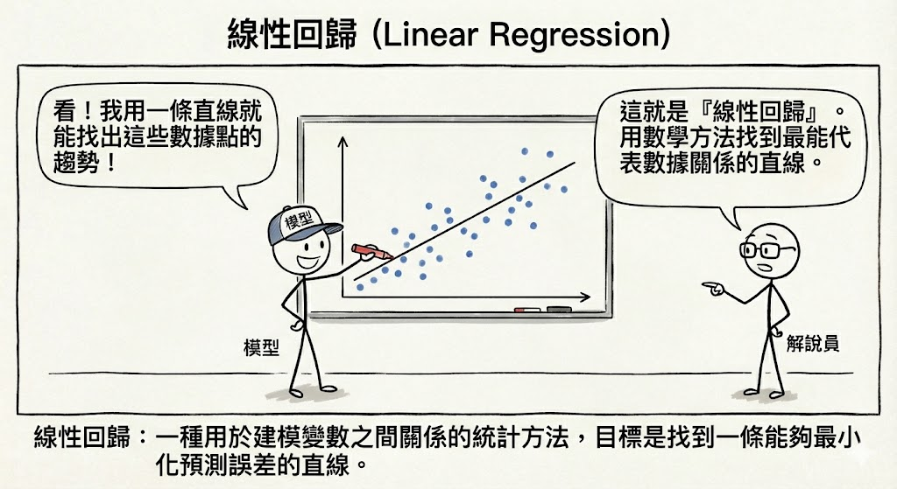
- 邏輯迴歸 (Logistic Regression)：
- 類型：分類 (Classification)
- 概念：雖然名字有「迴歸」， 但它其實是用來做「分類」的。 它像是一個開關， 判斷事情是「是」或「否」（0 或 1）。
- 數學原理 (Friendly Math)： 它其實就是把線性迴歸的結果， 丟進一個 S 型的函數（Sigmoid 函數）裡面： \[ P(y=1) = \frac{1}{1 + e^{-(wx+b)}} \]
- Sigmoid 函數：這個函數很神奇， 不管你輸入多大或多小的數字， 它吐出來的結果永遠在 0 到 1 之間。
- 機率：這個 0 到 1 的數字， 就代表「機率」。 例如算出 0.8， 就代表有 80% 的機率是垃圾郵件。
- 決策：通常我們設 0.5 為門檻。 大於 0.5 就是「是」， 小於 0.5 就是「否」。
- 應用：判斷電子郵件是不是垃圾郵件、 這筆交易是不是詐騙。
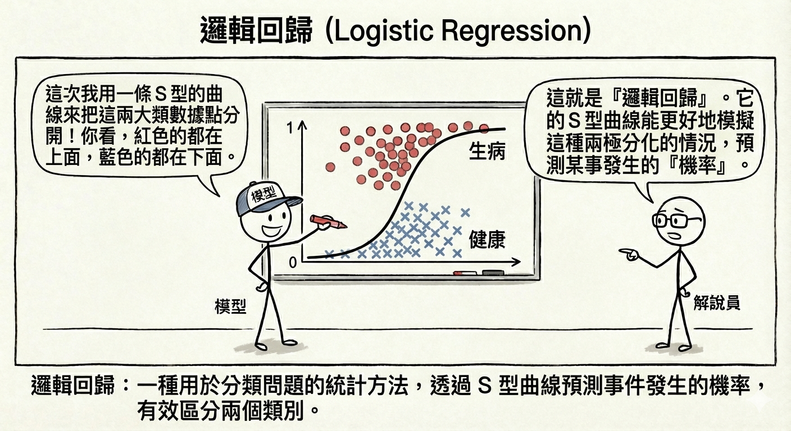
- 決策樹 (Decision Tree)：
- 類型：分類與預測 (Classification & Regression)
- 概念：這就像是在玩「20 個問題」遊戲。 透過一連串的「是/否」問題， 將數據層層分類， 直到得出結論。
- 數學原理 (Friendly Math)： 決策樹怎麼知道要先問哪個問題？ 它會算一個叫做 「亂度 (Entropy)」 或 「基尼係數 (Gini Impurity)」 的東西。
- 亂度：想像一個房間裡有紅球和藍球。 如果紅藍各半， 亂度最大（最難猜）；如果全是紅球， 亂度為 0（最好猜）。
- 資訊獲利 (Information Gain)：AI 會試著問一個問題（例如：球是大顆的嗎？ ）， 如果問完之後， 分出來的兩堆球「亂度」變小了， 代表這個問題問得好！AI 就是一直在找能讓亂度下降最快的問題。
- 結構：樹根是第一個問題， 樹枝是選項， 樹葉是最終的分類結果。
- 應用：銀行審核貸款（年收入 > 100萬？ 是 -> 信用良好？ 是 -> 核准）。
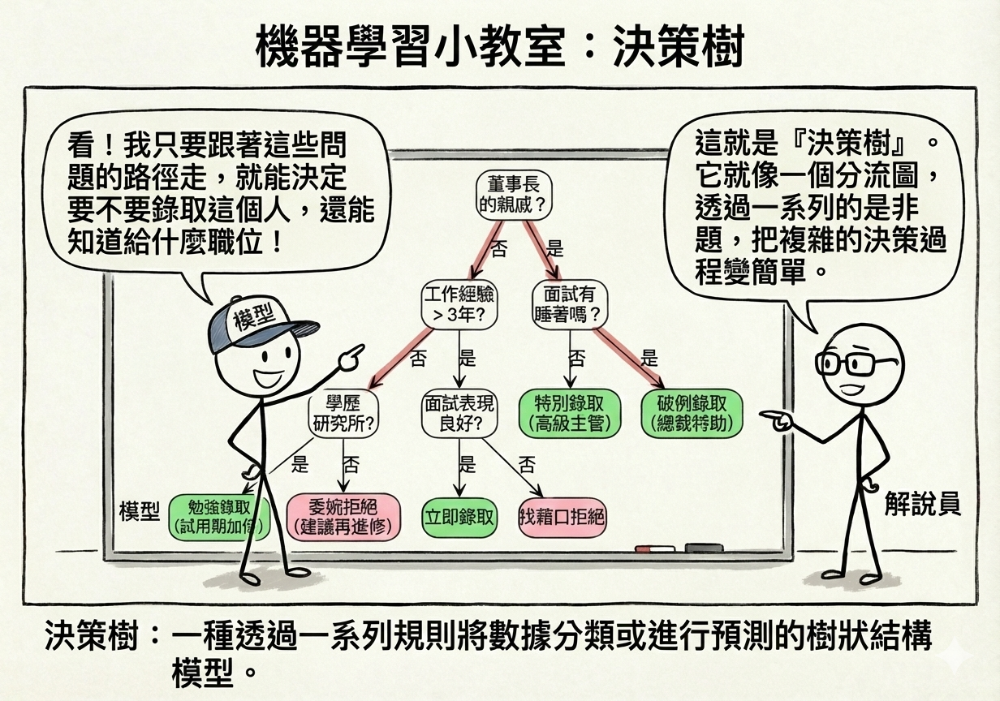
隨機森林 (Random Forest)：
- 類型：分類與預測 (Classification & Regression)
- 概念：俗話說「三個臭皮匠， 勝過一個諸葛亮」。 隨機森林就是種植很多棵「決策樹」， 然後讓它們投票。 如果大部分的樹都說是「A 類」， 那結果就是 A。 這通常比單一決策樹更準確。
- 數學原理 (Friendly Math)：
- 集成學習 (Ensemble Learning)：這背後的數學原理叫做「大數法則」。 假設每一棵樹的準確率只有 60%（比亂猜好一點）， 但如果我們有 100 棵樹一起投票， 犯錯的機率就會大幅下降。
- 隨機性：為什麼叫「隨機」？ 因為每棵樹看到的數據都不太一樣（隨機抽樣）， 這樣它們才會有不同的觀點， 投票起來才客觀。
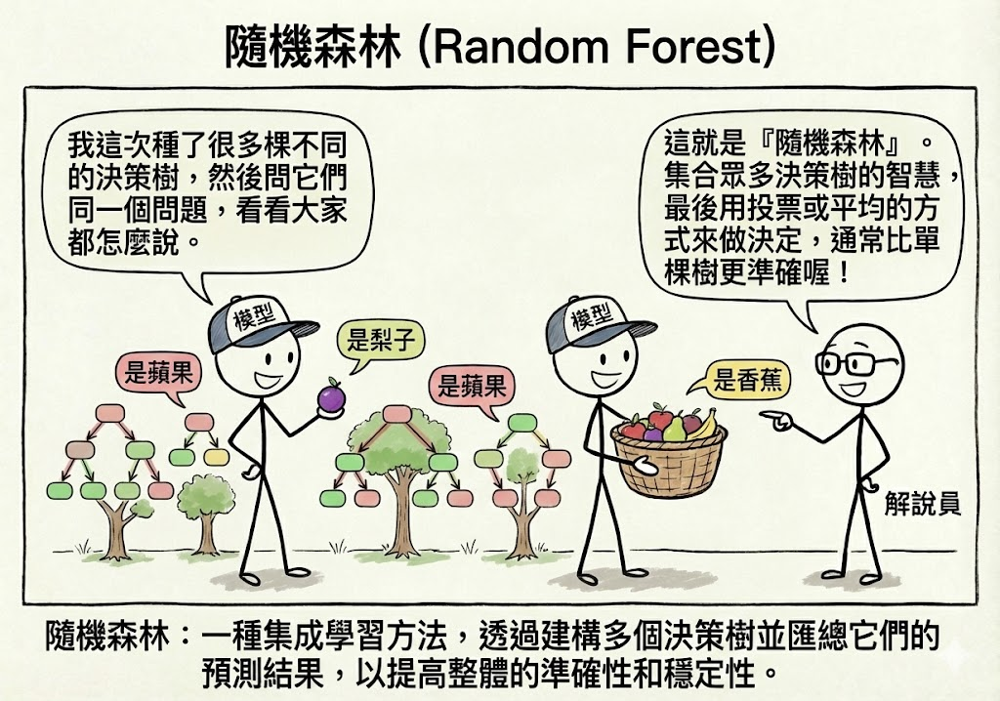
- 支援向量機 (SVM)：
- 類型：分類 (Classification)
- 概念：想像桌上有紅球和藍球混在一起。 SVM 的任務就是拿一根棍子（在二維平面是線， 三維空間是面）， 試著把紅球和藍球分得越開越好， 這根棍子就是「最佳超平面」。
- 數學原理 (Friendly Math)： SVM 不只是要分開， 還要找 「最寬的馬路 (Margin)」。
- Margin：這條線到最近的紅球和最近的藍球的距離。 SVM 想要讓這個距離最大化。
- 公式：目標是 Maximize \(\frac{2}{||w||}\)。 簡單說， 就是讓路越寬越好， 這樣以後有新的球丟進來， 才不會容易判斷錯誤。
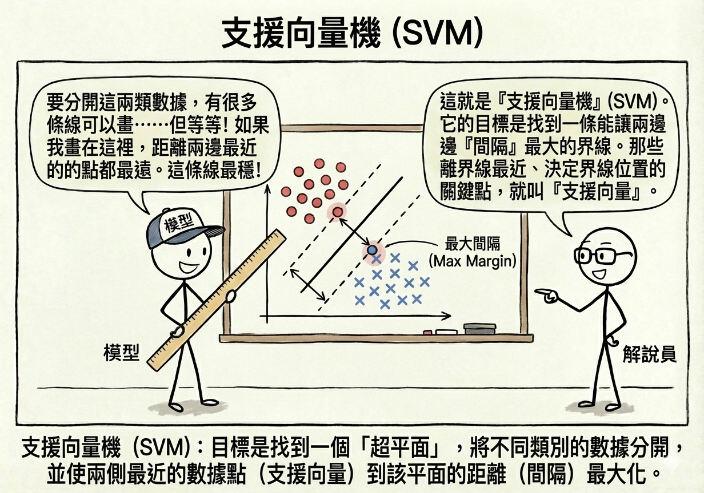
- K-近鄰演算法 (KNN)：
- 類型：分類 (Classification)
- 概念：物以類聚。 當來了一個新數據， KNN 會看它最近的 K 個鄰居是誰。 如果鄰居大多是紅球， 那它大概也是紅球。
- 數學原理 (Friendly Math)： 怎麼算「最近」？ 就是用我們國中學過的 「距離公式 (Euclidean Distance)」： \[ d = \sqrt{(x_1-x_2)^2 + (y_1-y_2)^2} \]
- AI 會算出新點跟所有舊點的距離， 然後挑出最近的 K 個（例如 K=3）。
- 如果這 3 個鄰居是「紅、 紅、 藍」， 那新點就是「紅」。
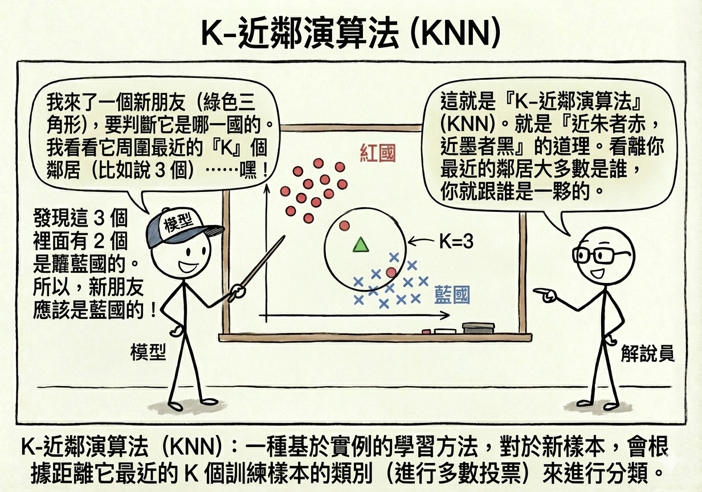
- K-平均演算法 (K-Means)：
- 類型：分群 (Clustering)
- 概念：這是一種「非監督式學習」（沒有標準答案）。 想像你有一堆混在一起的珠子， K-Means 會自動幫你把顏色或大小相近的珠子分成 K 堆。
- 數學原理 (Friendly Math)： 它在找 「重心 (Centroid)」。
- 先隨便選 K 個點當隊長（重心）。
- 每個人（數據點）都加入離自己最近的隊長那組。
- 隊長重新計算自己這組的中心位置， 移動過去。
- 重複步驟 2 和 3， 直到隊長不再移動為止。
- 這就像是大家在操場上集合， 最後會自然形成幾個小圈圈， 每個圈圈都有一個中心點。
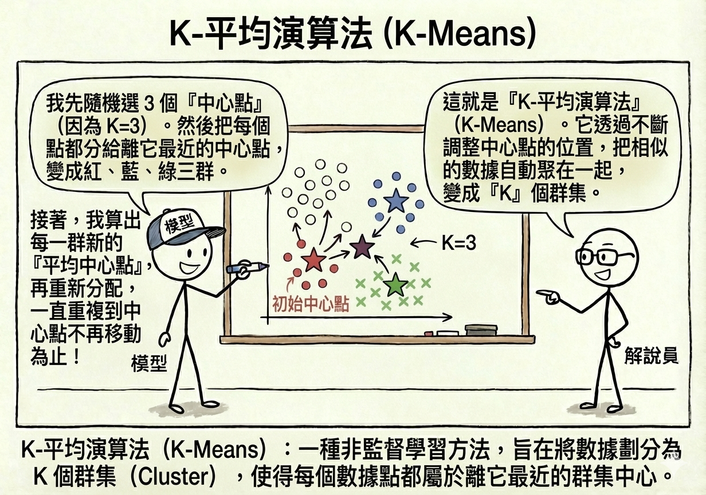
- 單純貝氏分類器 (Naive Bayes Classifier)：
- 類型：分類 (Classification)
- 概念：這是一個基於「機率」的分類器。 它很「單純 (Naive)」， 因為它假設所有的特徵都是獨立的（例如：它認為「有翅膀」和「會飛」這兩件事完全沒關係， 雖然現實中通常有關）。
- 數學原理 (Friendly Math)： 它的核心是 貝氏定理 (Bayes’ Theorem)： \[ P(A|B) = \frac{P(B|A) \times P(A)}{P(B)} \]
- 例子：我們想知道「這封信是垃圾郵件 (A)」的機率， 已知「信裡有 ‘免費’ 這個字 (B)」。
- AI 會去算：
- \(P(A)\)：原本垃圾郵件的比例有多少？ （先驗機率）
- \(P(B|A)\)：如果已經知道是垃圾郵件， 出現「免費」這個字的機率有多高？ （概似度）
- 把這些乘起來， 就能算出我們想知道的答案。
- 應用：垃圾郵件過濾（最經典的應用）、 情感分析（這句話是稱讚還是批評？ ）。
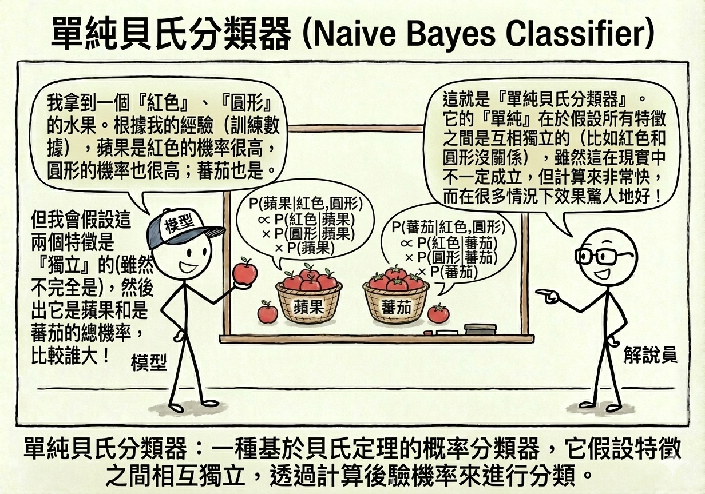
2.3 第三章：深度學習與神經網路 (Deep Learning & Neural Networks)
2.3.1 模仿大腦的運作
深度學習 (Deep Learning) 是機器學習的一種特殊形式， 它的靈感來自於人類大腦的運作方式。 我們的大腦由數十億個神經元組成， 它們相互連接傳遞訊號。 深度學習使用「人工神經網路 (Artificial Neural Networks)」， 模擬這種結構。
- 神經元 (Neuron)：接收輸入訊號， 經過處理（權重加權）， 決定是否向下傳遞。
- 層 (Layer)：神經網路通常有好幾層。 輸入層接收數據， 隱藏層負責複雜的運算， 輸出層給出結果。 「深度」學習就是指有很多層隱藏層。
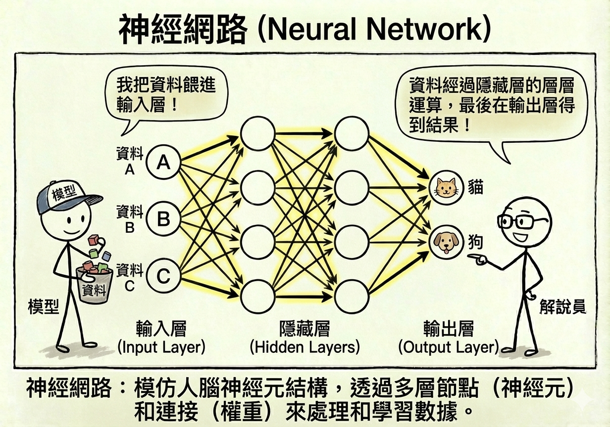
2.3.2 深度學習的三大巨頭
- 卷積神經網路 (CNN - Convolutional Neural Networks)：
- 專長：看。 CNN 非常擅長處理影像。 它像人類的眼睛一樣， 會先辨識邊緣、 線條， 再組合成形狀， 最後辨識出物體。
- 應用：人臉辨識、 醫療影像診斷、 自駕車看路標。
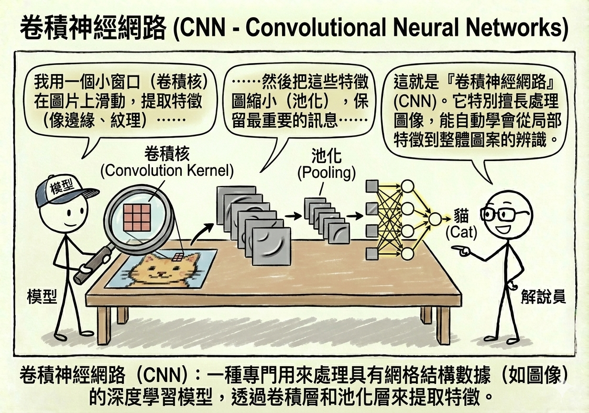
- 循環神經網路 (RNN - Recurrent Neural Networks)：
- 專長：記。 RNN 擅長處理有順序的數據， 它有「記憶」功能， 能記住前面的資訊來幫助理解後面的資訊。
- 應用：語音辨識（理解句子的前後文）、 股票預測（時間序列）、 語言翻譯。
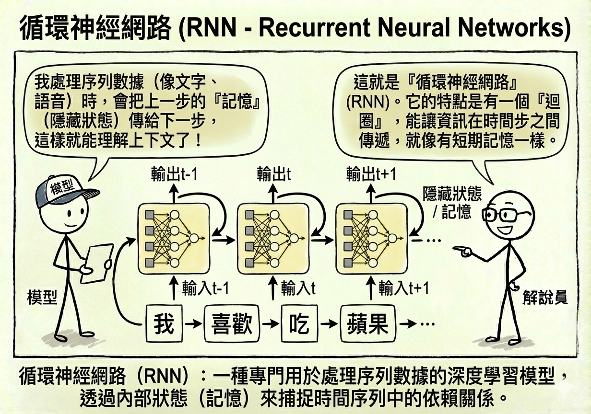
- Transformer：
- 專長：專注。 這是目前最強大的架構（如 ChatGPT 背後的技術）。 它引入了「自注意力機制 (Self-Attention)」， 能同時看到整篇文章， 並知道哪些字詞之間有強烈的關聯， 而不受距離限制。
- 應用：大型語言模型 (LLM)、 生成式 AI。
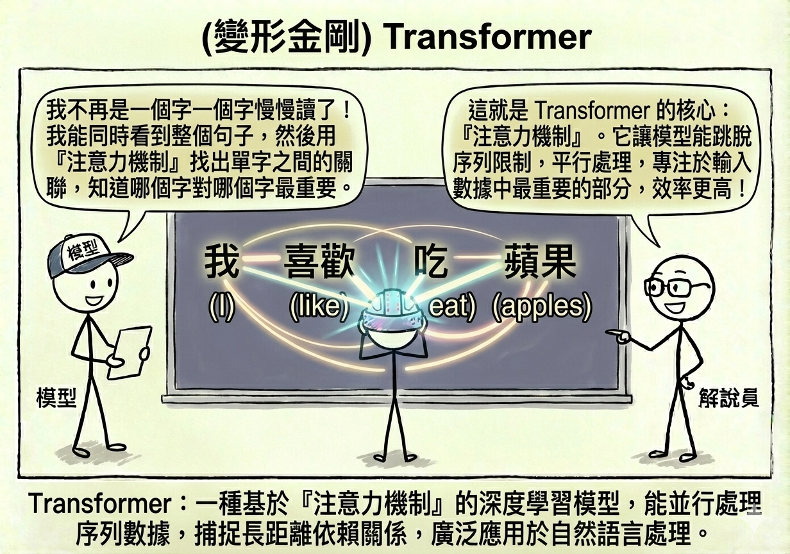
2.4 第四章：建模與調校 (Modeling & Tuning)
2.4.1 打造完美的 AI 模型
建立一個 AI 模型就像是訓練一個運動員， 需要經過精心的準備和訓練。
- 數據準備 (Data Preparation)：
- 垃圾進， 垃圾出 (Garbage In, Garbage Out)：如果你給模型錯誤或雜亂的數據， 它學出來的東西也會是一團糟。
- 特徵工程：把數據轉換成電腦好理解的格式。 例如， 電腦看不懂「紅色」、 「藍色」， 我們要把它變成數字編碼 (One-hot Encoding)。
- 標準化：把不同單位的數據（如身高 180 cm 和體重 70 kg）縮放到同一個範圍， 避免模型產生偏差。
- 模型訓練與評估 (Training & Evaluation)：
- 訓練集與測試集：我們通常把數據分成兩份。 80% 用來訓練（像課本）， 20% 用來考試（像期末考）， 看看模型是不是真的學會了， 還是只是死背答案。
- 交叉驗證 (Cross-validation)：為了更客觀， 我們會輪流用不同的數據來考試。
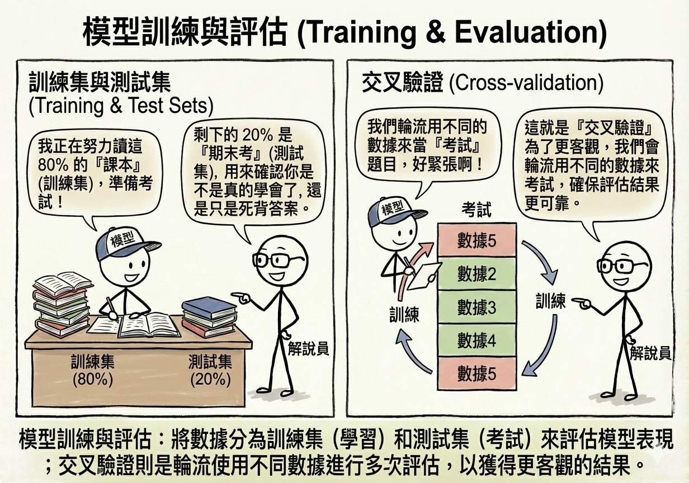
- 評估指標 (Metrics)：
- 準確率 (Accuracy)：考對了幾題？ （最直觀， 但不一定最好）。
- 召回率 (Recall)：該抓出來的壞人， 抓出了幾個？ （在醫療診斷或詐騙偵測中很重要， 我們寧可抓錯， 不可放過）。
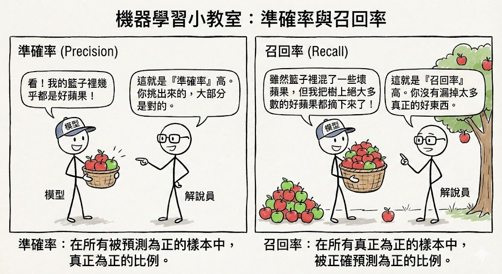
- 過擬合 (Overfitting) 與 欠擬合 (Underfitting)：
- 過擬合：書讀太死。 模型在訓練集（課本）表現滿分， 但遇到新數據（考試）就掛了。 解決方法：多做題目（增加數據）、 不要讀太細（正規化）。
- 欠擬合：書沒讀懂。 模型連訓練集都學不好。 解決方法：換個更聰明的腦袋（更複雜的模型）。
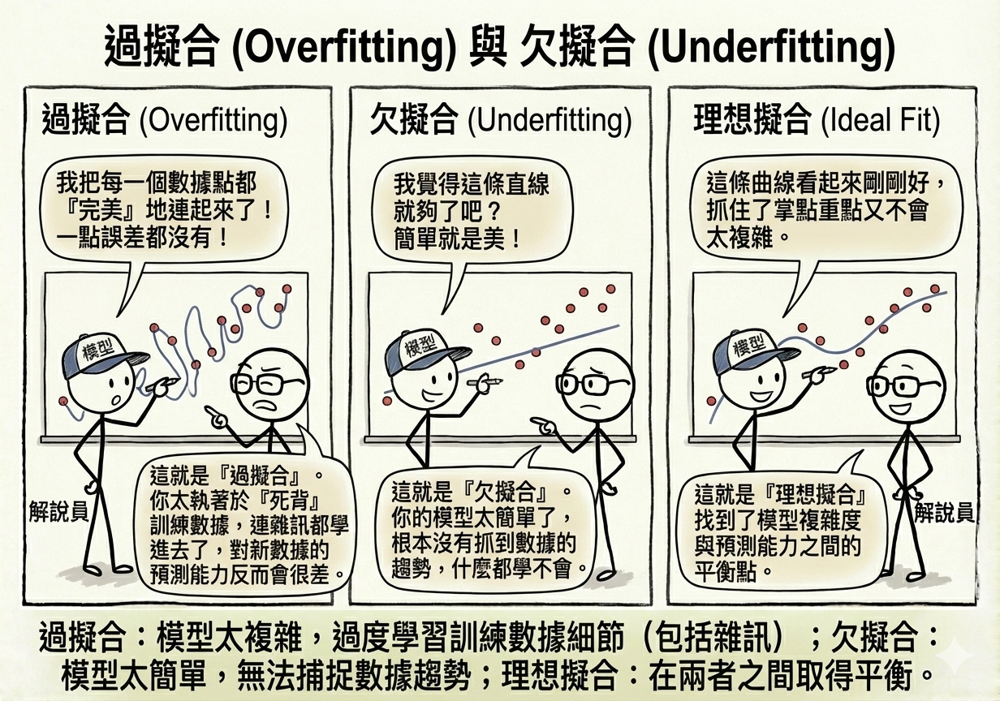
這就是 AI 與機器學習的基礎之旅。 希望這些概念能幫助你更好地理解這個正在改變世界的技術！